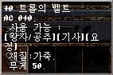

|
2002年9月4日
美國正式伺服器9月4日更新內容
原文：美國天堂官方網站公告
中文翻譯：天堂．真相
1. 修正了艾爾穆的祝福、敏捷頭盔及體質頭盔顯示防禦力的錯誤。
2. 修正了王族使用魔法頭盔時不會顯示有關魔法的錯誤。
3. 修正了由隱藏之谷會傳送往說話之島的錯誤。
4. 修正了玩家與部分NPC交易時所產生的錯誤。
5. 修正了怪物會在牆內掉下道具的錯誤。
6. 製造沙哈之弓的NPC Talass暫時禁止了作用。
7. 說話之島的圖像重新包裝。
8. 所有說話之鳥的書籤都被移除，大家要重新記憶書籤。
9. 殺人時所得的經驗值減少了，大家在殺死等級10或以下的角色時不會得到經驗值。
10. 加入了格鬥場生死決鬥系統，重點如下：
- 玩家可以利用奇岩格鬥場與亞丁大陸的怪物戰鬥，格鬥場系統會控制怪物出現的時間，時間越久，所出現的怪物難度越強，參與的角色限制為等級40，而所出現怪物亦會適合此等級。
- 入場費為1,000金幣。
- 玩家可以在比賽前5分鐘購買入場卷，而在最後一組怪物出現的5分鐘後，玩家將會被傳送離場，在比賽進行中玩家並不會被禁止使用傳送術，但要注意的是在傳送離開後便不能再進入比賽場地，因此如無需要切勿離場。
- 每天會有兩場賽事。（在測試過程中實際時間會更改）
- 觀看賽事的門卷售價為100金幣。
- 在格鬥場中是禁止復活的，但可以使用藥水。
- 在格鬥場中體力和魔力是不會自動回復的，而玩家可以使用回復體力或魔力的藥水。在場中使用魔力藥水後，會和正常回復魔力的速度一樣，並不會像在場外般加快。
- 玩家在格鬥場中可以使用召喚或迷魅的怪物。
- 玩家在格鬥場中可以PvP(Player Versus Player)，即是可以攻擊其他玩家。
- 玩家被怪物殺死後會掉經驗掉，但被其他玩家殺死的話則不會掉。玩家在殺死怪物後可以得到經驗值及戰利品。
- 玩家在格鬥場中死亡後會有機會掉下道具。
- 整個格鬥場都是戰鬥區域(Combat Zone)。
11. 加入了新的角色任務（等級15），重點如下：
騎士任務：NPC 韋基(Ricky)，銀騎士村
- 擊倒黑騎士團可以得到黑騎士盟的文件，韋基會用騎士頭巾交換，騎士頭巾是頭盔的一種。
- 假如想更新為更好的紅騎士頭巾，便要有黑騎士中取得古老的交易文件，他們可以從銀騎士村木人場下方找到。當找了古老的交易文件後，玩家需要殺死龍龜以得到龍龜殼。找到了古老的交易文件及龍龜殼後，便要將他們帶到銀騎士村的製造NPC Aanon去交換紅騎士頭巾。
- 黑騎士盟的文件，古老的交易文件及龍龜殼可以得到多於一個，但是不可轉移的。不過玩家可以將他們賣給NPC換取少許金幣。
王族任務：NPC 施路(Zero)，肯特村
- NPC施路會考驗王族，去找尋及擊到一群在肯特城堡出現的黑騎士搜索隊並得到搜索的文件。將搜索的文件交給施路後便可以得到紅斗篷。
- 從施路得到紅斗篷後，他會建議你去說話之島探訪甘特。甘特會要求你到說洞殺死高侖石頭人並將生命的奧秘交給他。將生命的奧秘交給甘特後，他會賞賜你一本正確目標的魔法書。
法師任務：NPC 真悟(Jem)，說話之島
- NPC真悟會考驗大家要從說洞內得到食屍鬼的指甲及尖牙，他會有詛咒的魔法書交換。
- 之後真悟會要求你得到骷髏頭，連同詛咒的魔法書交給他後便可以得到魔法能量之書。
妖精任務：NPC 奧夫(Oth)，燃柳村
- 在收集都達瑪拉魔法書，甘地魔法書，阿吐巴魔法書及那魯加魔法書後，奧夫會以敏捷頭盔交換。
而大家最關心的瑪那魔杖任務會否被取消呢？一切還待美國伺服器的更新。
新任務防具的能力值
原文：韓國天堂官方網站新聞稿No.9
英文翻譯：Lineage Compendium
|
圖示
|
中文名稱 |
Name |
防禦 |
重量 |
材質 |
職業 |
額外效果 |
可否轉移 |
可否加防 |
|
騎士頭巾 |
Knight's Hood |
1 |
30 |
布 |
騎士 |
無 |
不可 |
不可 |
|
紅騎士頭巾 |
Red Knight's Hood |
2 |
20 |
布 |
騎士 |
無 |
可以 |
安定值6 |
 |
紅斗篷 |
Red Cloak |
2 |
10 |
布 |
王族 |
+1魅力 |
可以 |
安定值4 |
|
詛咒的魔法書 |
Cursed Spellbook |
1 |
20 |
紙 |
法師 |
無 |
不可 |
不可 |
|
魔法能量之書 |
Book of Magic Power |
2 |
20 |
紙 |
法師 |
+1智力 |
可以 |
安定值4 |
|
敏捷頭盔 |
Helm of Dexterity |
1 |
13 |
皮 |
妖精 |
+1敏捷 |
可以 |
安定值6 |
|
體質頭盔 |
Helm of Constitution |
1 |
13 |
皮 |
妖精 |
+1體質 |
可以 |
安定值6 |
韓國測試伺服器出現多羅皮帶
來源：Lineage Playforum
英文翻譯：Lineage Compendium

Lineage Playforum報告多羅皮帶已經在韓國測試伺服器上出現，由遺忘之島的多羅掉下，韓國官方對於多羅皮帶的效用為"增加載重量10%"，而玩家發現在裝備多羅皮帶後載重會由100%降至82%，在37%時則降至33%。而另一個特別之處是法師不能使用多羅皮帶，反而可以使用更好的歐吉皮帶。 |